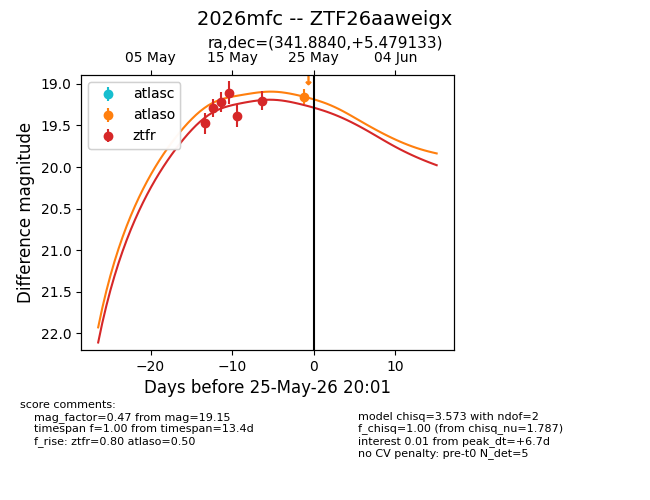
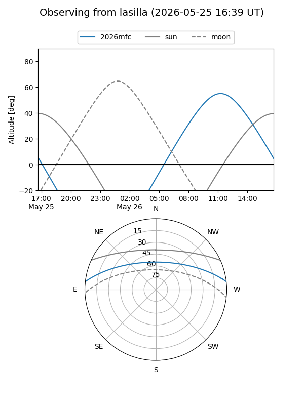
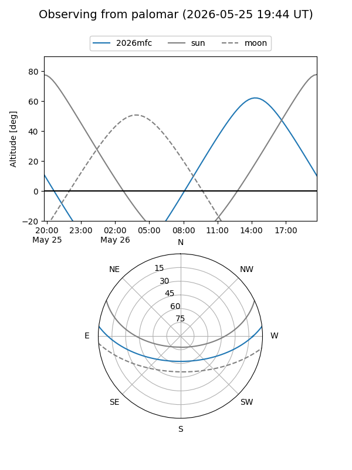
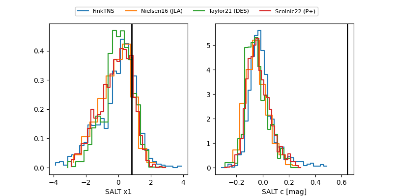

2026mfc
Target 2026mfc at 2026-05-25 20:03
Aliases and brokers:
lsst-FINK: link
lsst-Lasair: link
lsst-ALeRCE: link
ztf-FINK: link
ztf-Lasair: link
ztf-ALeRCE: link
TNS: link
YSE: link
alt names
ZTF26aaweigx (ztf,fink_ztf)
2026mfc (tns,yse)
Coordinates:
equatorial (ra, dec) = 341.8840,+5.47913
equatorial (HMS+DMS) = 22:47:32.17,+05:28:44.88
galactic (l, b) = (75.7160,-45.72848)
Flags:
Photometry:
last atlaso=19.15, ztfr=19.20
1 atlaso, 6 ztfr detections
Lightcurve

Visibility


Additional plots
